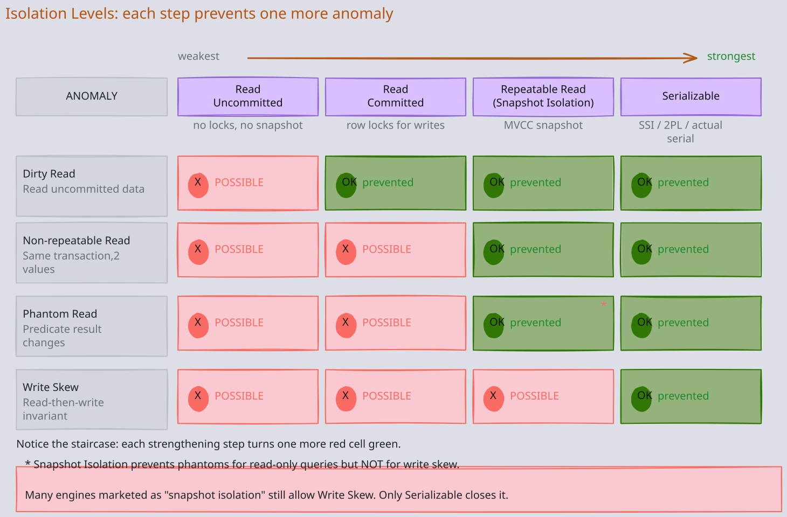
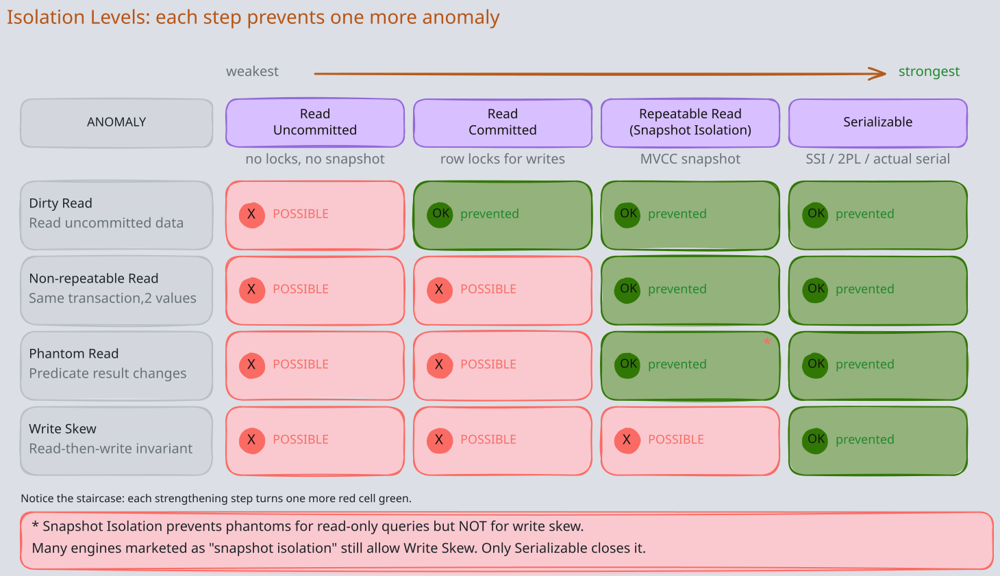
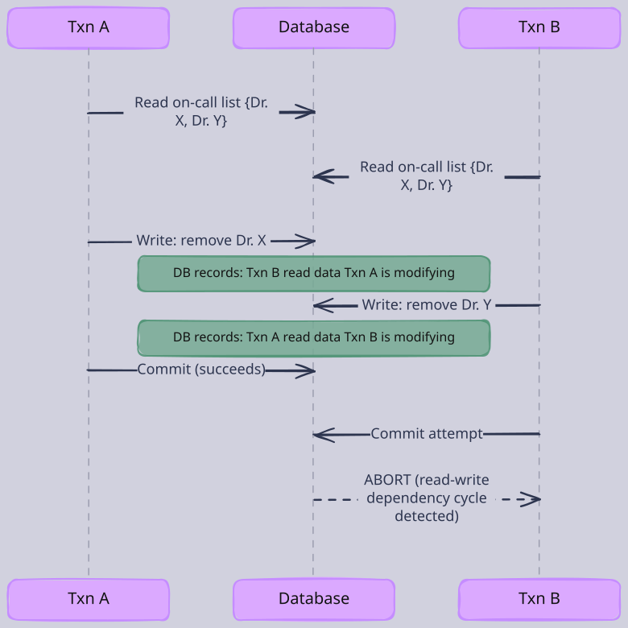
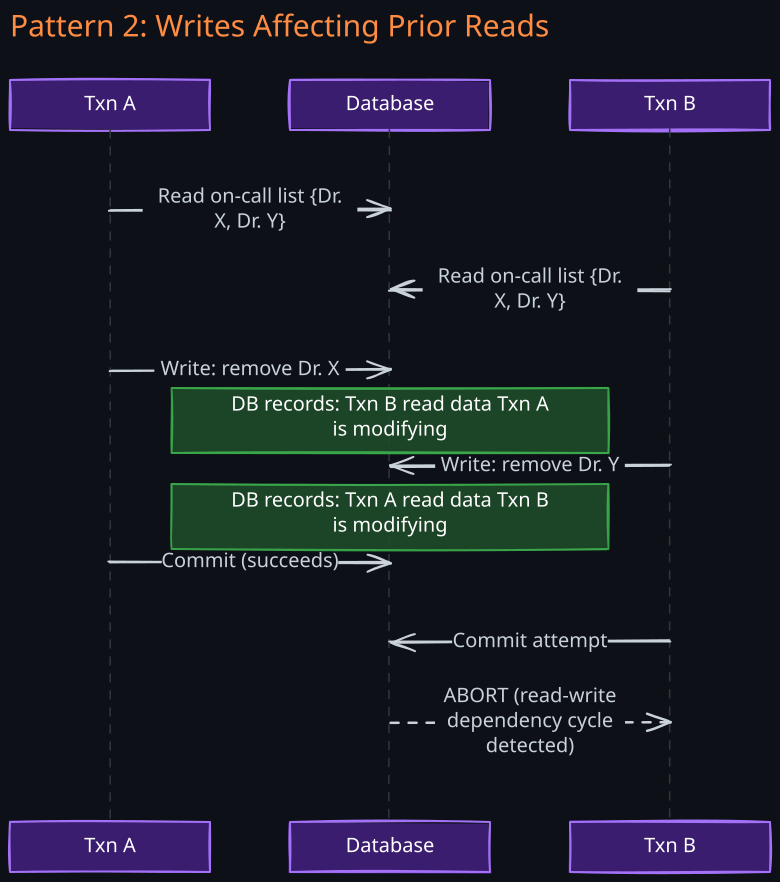
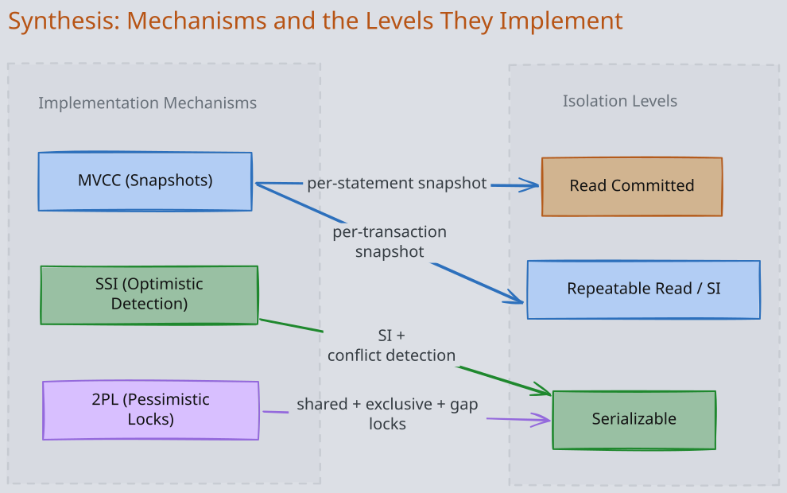
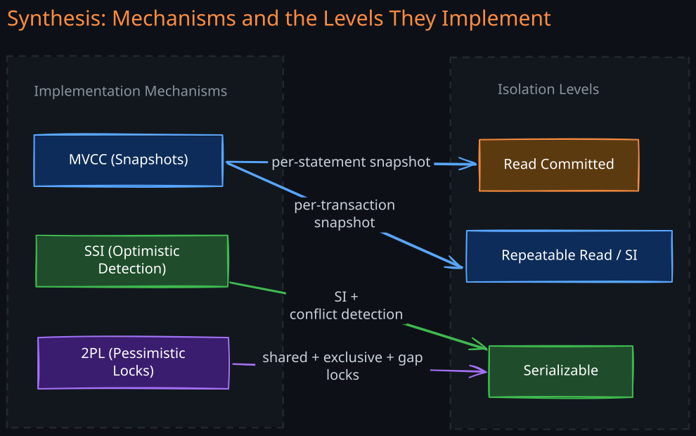

The Story
Most production databases run at Read Committed or Snapshot Isolation, not Serializable, because Serializable is too slow. But these weaker levels allow write skew — where two transactions each read valid state, make valid decisions, but the combined result violates an invariant. A real example: two doctors each check that at least one doctor is on-call, see each other listed, and both remove themselves. Now nobody is on-call. Both transactions were individually correct. The system is wrong. This isn’t hypothetical — it happens in scheduling systems, inventory management, and seat booking constantly. The isolation level you choose determines which bugs are possible, and most engineers don’t know what they’ve signed up for.
The fundamental problem of transaction isolation is a tension between two goals that directly oppose each other. On one side is correctness: if every transaction ran alone, one at a time, there would be no concurrency bugs at all. On the other side is performance: serial execution wastes hardware capacity. Real systems have hundreds or thousands of transactions in flight simultaneously, and making them wait in line destroys throughput.
Every isolation level is a point on the spectrum between these two extremes. Weaker levels allow more concurrency but expose transactions to anomalies — situations where interleaved operations produce results that could never occur under serial execution. Stronger levels eliminate more anomalies but pay for it with locking, aborts, or reduced parallelism.
Understanding isolation levels requires understanding three things in order:
- What can go wrong — the anomalies that arise from concurrent execution
- What guarantees each level provides — which anomalies each level prevents and which it allows
- How the database enforces those guarantees — the mechanisms (06-MVCC, 2PL, SSI) that implement each level
1. Common Read and Write Anomalies
Isolation levels exist because concurrent transactions can interleave their operations in ways that produce incorrect results. Each anomaly below has a specific mechanism — a precise sequence of interleaved reads and writes that produces the problem. Understanding the mechanism is essential because it reveals exactly what the isolation level must prevent.
1. Dirty Reads
A transaction reads data written by another transaction that has not yet committed. If the writing transaction later aborts, the reading transaction acted on data that never existed.
Mechanism — step-by-step trace:
| Step | Txn A | Txn B | account.balance |
|---|---|---|---|
| 1 | BEGIN | 10,000 | |
| 2 | UPDATE balance = 2,000 | 2,000 (uncommitted) | |
| 3 | BEGIN | ||
| 4 | READ balance -> 2,000 | ||
| 5 | Shows “low funds” warning | ||
| 6 | ROLLBACK | 10,000 (restored) |
Txn B read a value that was never committed. If Txn B made decisions based on that value (transferred money, sent an alert, denied a purchase), those decisions are based on a phantom state of the database.
Why it matters beyond simple reads: Dirty reads are particularly dangerous with dirty writes. If two transactions both try to update the same row, and Txn B overwrites Txn A’s uncommitted write, then Txn A’s rollback may undo Txn B’s change as well — producing a lost update that neither transaction intended.
Prevented by: Read Committed and all stronger levels. The database ensures a transaction only sees committed values, typically by returning the old committed value for any row that has an uncommitted write.
2. Non-Repeatable Reads (Read Skew)
A transaction reads the same row twice and gets different values because another transaction modified and committed the row between the two reads. The first transaction’s view of the database is inconsistent within its own execution.
Mechanism — step-by-step trace:
| Step | Txn A (long report) | Txn B (transfer) | accounts |
|---|---|---|---|
| 1 | BEGIN | savings=500, checking=500 | |
| 2 | READ savings -> 500 | ||
| 3 | BEGIN | ||
| 4 | UPDATE savings = 400 | ||
| 5 | UPDATE checking = 600 | ||
| 6 | COMMIT | savings=400, checking=600 | |
| 7 | READ checking -> 600 | ||
| 8 | Total = 500 + 600 = 1100 |
Txn A sees the account balances at two different points in time. It reads savings before the transfer and checking after the transfer, producing a total of 1100 when the actual total is always 1000. This is called read skew because the transaction’s reads are skewed across time.
Why it matters: This anomaly is especially dangerous for:
- Backup operations — a backup that reads some tables before a transfer and other tables after will contain an internally inconsistent snapshot
- Analytical queries — aggregate reports that scan large datasets will produce nonsensical totals
- Integrity checks — a query verifying that debits equal credits across all accounts will fail spuriously
Prevented by: Repeatable Read (Snapshot Isolation) and all stronger levels. The database gives each transaction a consistent snapshot, so all reads within the transaction see the same committed state.
3. Phantom Reads
A transaction runs a range query twice and gets different sets of rows because another transaction inserted or deleted rows matching the range condition between the two queries. Unlike non-repeatable reads (which affect a specific row), phantom reads affect the set of rows matching a predicate.
Mechanism — step-by-step trace:
| Step | Txn A (reporting) | Txn B (new order) | orders table |
|---|---|---|---|
| 1 | BEGIN | 3 pending orders, total=50,000 | |
| 2 | SELECT SUM(amount) WHERE status=‘pending’ -> 50,000 | ||
| 3 | BEGIN | ||
| 4 | INSERT order(amount=10,000, status=‘pending’) | ||
| 5 | COMMIT | 4 pending orders, total=60,000 | |
| 6 | SELECT SUM(amount) WHERE status=‘pending’ -> 60,000 |
The critical distinction from non-repeatable reads: Txn A’s original rows were not modified. A new row appeared that matches the query predicate. Row-level locks on the original three rows would not prevent this because the new row did not exist when the locks were acquired.
Why it matters for locking: This is why preventing phantoms requires more than row-level locking. The database must lock the predicate — the condition status='pending' — or the index range that the query scanned. This is fundamentally harder than locking individual rows and is one reason why Serializable isolation is more expensive than Repeatable Read.
Prevented by: Serializable isolation. Under 2PL, this is achieved with index-range locks (also called next-key locks) that lock not just the rows but the gaps between index entries, preventing insertions into the scanned range.
4. Write Skew
Write skew is the subtlest concurrency anomaly and the one most frequently misunderstood. It occurs when two transactions read the same set of rows, each makes a write decision based on what it read, and together the two writes violate an invariant — even though each write, considered individually, was valid.
The key insight: neither transaction modifies the rows the other transaction read. Each transaction reads overlapping data but writes to different rows. This is why snapshot isolation misses it — there is no write-write conflict to detect.
Pattern: Write skew always follows the same structure:
- Both transactions read the same set of rows (checking a precondition)
- Each transaction decides its write is safe based on what it read
- Each transaction writes to a different row
- The combined effect of both writes violates the precondition
Example 1: Doctor On-Call
Invariant: at least one doctor must be on call at all times.
| Step | Txn A (Dr. X) | Txn B (Dr. Y) | on_call table |
|---|---|---|---|
| 1 | BEGIN | BEGIN | {Dr. X: on, Dr. Y: on} |
| 2 | SELECT COUNT(*) WHERE on_call=true -> 2 | ||
| 3 | SELECT COUNT(*) WHERE on_call=true -> 2 | ||
| 4 | ”2 doctors on call, safe to leave” | ||
| 5 | ”2 doctors on call, safe to leave” | ||
| 6 | UPDATE SET on_call=false WHERE doctor=‘X’ | ||
| 7 | UPDATE SET on_call=false WHERE doctor=‘Y’ | ||
| 8 | COMMIT | {Dr. X: off, Dr. Y: on} | |
| 9 | COMMIT | {Dr. X: off, Dr. Y: off} |
Result: zero doctors on call. The invariant is violated.
Under snapshot isolation, there is no conflict detected because Txn A wrote to Dr. X’s row and Txn B wrote to Dr. Y’s row — different rows, no write-write conflict. Each transaction’s snapshot showed 2 doctors on call, so each independently concluded it was safe to go off call.
Example 2: Meeting Room Double-Booking
Invariant: no two meetings may overlap in the same room.
| Step | Txn A | Txn B |
|---|---|---|
| 1 | BEGIN | BEGIN |
| 2 | SELECT COUNT(*) FROM bookings WHERE room=‘101’ AND time overlaps 2-3pm -> 0 | |
| 3 | SELECT COUNT(*) FROM bookings WHERE room=‘101’ AND time overlaps 2-3pm -> 0 | |
| 4 | INSERT booking(room=‘101’, 2-3pm) | |
| 5 | INSERT booking(room=‘101’, 2-3pm) | |
| 6 | COMMIT | COMMIT |
Result: two overlapping bookings for room 101. Each transaction checked for conflicts, found none, and inserted. Neither write conflicts with the other’s write (both are inserts to different rows), so snapshot isolation allows both.
This variant is especially insidious because it involves phantoms: the rows that would indicate a conflict do not exist yet at the time of the check. The transaction is reading the absence of rows and making a decision based on that absence.
Example 3: Serializable Account Constraint
Invariant: the sum of checking + savings must never go below zero.
| Step | Txn A | Txn B | checking | savings |
|---|---|---|---|---|
| 1 | BEGIN | BEGIN | 100 | 100 |
| 2 | READ checking=100, savings=100, total=200 | |||
| 3 | READ checking=100, savings=100, total=200 | |||
| 4 | UPDATE checking = checking - 200 | |||
| 5 | UPDATE savings = savings - 200 | |||
| 6 | ”total was 200, withdrawing 200 leaves 0, OK” | |||
| 7 | ”total was 200, withdrawing 200 leaves 0, OK” | |||
| 8 | COMMIT | COMMIT | -100 | -100 |
Result: total balance is -200, violating the constraint. Each transaction read the same balances, independently concluded the withdrawal was safe, but wrote to different rows (one to checking, one to savings).
The General Pattern
Write skew is a generalization of the lost update problem. In a lost update, two transactions write to the same row and one overwrites the other. In write skew, they write to different rows but the combination violates a multi-row constraint. This is why it requires serializable isolation to prevent — the database must understand that the transactions’ reads and writes are logically connected across multiple rows.
Prevented by: Serializable isolation only. Under 2PL, the shared locks acquired during the read phase prevent the other transaction’s write. Under SSI, the conflict detection identifies the read-write dependency cycle and aborts one transaction. Under snapshot isolation, there is no mechanism to detect this because the writes target different rows.
2. Isolation Levels and Their Guarantees
Each isolation level defines a contract: the database promises to prevent certain anomalies. Moving up the hierarchy prevents more anomalies but costs more in locking, blocking, or aborts.


| Anomaly | Read Uncommitted | Read Committed | Repeatable Read / SI | Serializable |
|---|---|---|---|---|
| Dirty Reads | Allowed | Prevented | Prevented | Prevented |
| Non-Repeatable Reads | Allowed | Allowed | Prevented | Prevented |
| Phantom Reads | Allowed | Allowed | Prevented* | Prevented |
| Write Skew | Allowed | Allowed | Allowed | Prevented |
Snapshot Isolation prevents phantoms for read-only queries (the snapshot is consistent), but does not prevent the write skew variant of phantoms where a transaction reads the absence of rows and then inserts.
1. Read Uncommitted
The weakest level. A transaction can see uncommitted writes from other transactions. Almost no database uses this as the default because it provides nearly no useful guarantees. Its only advantage is zero overhead — no locks, no version tracking.
Mechanism: No read locks, no snapshot. A read simply returns the current value of the row, whether committed or not.
2. Read Committed
The most widely used default isolation level (PostgreSQL, SQL Server, Oracle). It provides two guarantees:
- No dirty reads: A transaction only sees committed data. When reading a row that has an uncommitted write, the database returns the previous committed version.
- No dirty writes: A transaction can only overwrite committed data. This is enforced with row-level exclusive locks held for the duration of the write (until commit).
Mechanism: The database maintains two versions of each modified row — the old committed value and the new uncommitted value. Reads from other transactions always see the old committed version until the writing transaction commits. Critically, each SQL statement within a transaction gets its own fresh view of committed data. If another transaction commits between two statements, the second statement sees the new value.
What it does NOT prevent: Because each statement sees a fresh snapshot, two reads of the same row within one transaction may return different values if another transaction committed in between. This is the non-repeatable read anomaly.
3. Repeatable Read (Snapshot Isolation)
This level gives each transaction a consistent snapshot of the entire database as of the transaction’s start time. Every read within the transaction sees the same committed state, regardless of what other transactions commit during its execution.
Mechanism: MVCC is the standard implementation. When a transaction begins, it receives a transaction ID. When reading a row, the database applies visibility rules: it returns the latest version of the row that was committed before the transaction’s snapshot. Uncommitted writes and writes committed after the snapshot are invisible.
The SQL standard defines “Repeatable Read” as a level that prevents dirty reads and non-repeatable reads. In practice, most databases implement it using snapshot isolation (SI), which is slightly different from the standard’s lock-based definition. SI provides a consistent snapshot for the entire transaction, which as a side effect also prevents phantom reads for read-only queries.
Critical caveat: Snapshot Isolation is not Serializable. SI prevents dirty reads, non-repeatable reads, and phantom reads on existing rows, but it does not prevent write skew. Two transactions can read overlapping data, write to different rows, and both commit successfully — violating multi-row invariants. This is the most important distinction in the isolation level hierarchy.
What it does NOT prevent: Write skew (see examples above). The snapshot ensures each transaction sees a consistent view, but the database does not detect that two transactions’ writes, when combined, violate an invariant. There is no write-write conflict because they write to different rows. The core issue is that each transaction reads a predicate (e.g., “how many doctors are on call?”), makes a decision based on the result, and then writes — but between the read and the write, another transaction invalidated the precondition the first transaction relied on. SI does not catch this because it only checks for write-write conflicts at commit time, not for read-then-write dependency violations where the data a transaction read was logically stale when the transaction wrote. This is exactly the gap SSI closes: it tracks these read-write dependencies and aborts a transaction if the predicate it relied on was changed by a concurrent commit.
4. Serializable Isolation
The strongest level. It guarantees that the result of concurrent execution is equivalent to some serial ordering of those transactions. This prevents all anomalies, including write skew and every edge case of phantom reads.
The price is higher: more locking, more aborts, or reduced concurrency. But the correctness guarantee is absolute — any invariant that would be maintained under serial execution is also maintained under Serializable isolation.
There are three fundamentally different approaches to implementing it:
Approach 1: Actual Serial Execution
The simplest conceptual approach — eliminate concurrency entirely. Execute all transactions sequentially on a single thread. This sounds absurd for performance, but it became practical when:
- Active datasets began fitting entirely in RAM (no disk I/O stalls)
- Transactions were submitted as stored procedures (eliminating network round-trip latency between statements)
- OLTP transactions are typically short and fast
Limitations: Throughput is bounded by a single CPU core. Cross-partition transactions require coordination across threads, destroying the single-thread advantage. Any transaction that performs disk I/O or waits for external input blocks the entire pipeline. Used in VoltDB and Redis (single-threaded command execution).
Approach 2: Two-Phase Locking (2PL)
Two-Phase Locking is a pessimistic approach that prevents conflicts by making transactions acquire locks before accessing data and holding all locks until the transaction ends.
How it prevents each anomaly:
- Dirty reads / Non-repeatable reads: A reader acquires a shared lock on the row. A writer must acquire an exclusive lock, which conflicts with the shared lock. So a writer waits for readers to finish, and readers wait for writers to finish. This means readers block writers and writers block readers — the fundamental cost of 2PL.
- Phantom reads: 2PL uses index-range locks (next-key locks). Instead of locking individual rows, it locks ranges in the index. If a transaction scans all rows where
status='pending', it locks the index range for that predicate. Any insert into that range must acquire a conflicting lock and wait. - Write skew: The shared locks acquired during the read phase prevent the other transaction from writing. In the doctor on-call example, both transactions acquire shared locks on the on_call rows. When Txn A tries to update Dr. X’s row to off-call, it needs an exclusive lock, which conflicts with Txn B’s shared lock. One must wait, and when it resumes, it re-evaluates with the updated data.
Downside: Reduced concurrency (readers block writers), frequent deadlocks (two transactions each waiting for the other’s lock, requiring one to be aborted), and unpredictable latency under contention. This is the traditional implementation used by MySQL InnoDB SERIALIZABLE.
Approach 3: Serializable Snapshot Isolation (SSI)
SSI is an optimistic approach. It allows transactions to proceed without blocking, running on top of snapshot isolation. At commit time, the database checks whether the transaction participated in a serialization conflict. If so, it aborts the transaction.
SI vs SSI — the critical distinction: Snapshot Isolation gives each transaction a consistent 06-MVCC snapshot. Readers never block writers. SI prevents dirty reads, non-repeatable reads, and read-only phantoms. But SI does not prevent write skew because it has no mechanism to detect read-write dependency cycles. SSI = SI + conflict detection at commit time, closing the write skew gap and achieving full serializability.
SSI is implemented in PostgreSQL SERIALIZABLE (v9.1+) and FoundationDB. MySQL’s SERIALIZABLE level uses 2PL, not SSI.
3. SSI Conflict Detection in Depth
SSI tracks two patterns that indicate a non-serializable execution. Both patterns detect situations where a transaction made a decision based on data that was concurrently invalidated.
1. Pattern 1: Stale MVCC Reads
A transaction read from its snapshot, but a concurrent transaction has since committed a write that changes the data the first transaction read. The first transaction’s read is now stale — it acted on outdated information.
Step-by-step scenario:
| Step | Txn A (order placement) | Txn B (inventory drain) | stock row |
|---|---|---|---|
| 1 | BEGIN | stock = 10 | |
| 2 | UPDATE stock = 0 | 0 (uncommitted) | |
| 3 | BEGIN (snapshot taken) | ||
| 4 | READ stock -> 10 (from snapshot, ignoring Txn B’s uncommitted write) | ||
| 5 | COMMIT | stock = 0 (committed) | |
| 6 | ”stock is 10, safe to place order” | ||
| 7 | INSERT order for 5 units | ||
| 8 | COMMIT attempt | ||
| 9 | ABORT — SSI detects Txn A’s read of stock=10 is stale |
How SSI detects this: When Txn A took its snapshot at step 3, Txn B’s write to the stock row was already in progress but uncommitted. The database records that Txn A’s snapshot ignored an uncommitted write by Txn B. When Txn B commits (step 5) and then Txn A attempts to commit (step 8), SSI checks: did Txn A read any data that was concurrently modified by a now-committed transaction? The stock row was read by Txn A and written by Txn B. SSI detects the stale read and aborts Txn A.
Data structure: The database maintains a record of which transactions have uncommitted writes on which rows. When a transaction reads a row and skips an uncommitted version (because it is not yet visible per MVCC rules), this fact is noted. Later, if the skipped transaction commits, the reading transaction is marked as having a potentially stale read.
2. Pattern 2: Writes Affecting Prior Reads
A transaction writes to data that another active transaction has already read. This creates a read-write dependency: the reading transaction made decisions based on data that the writing transaction is about to change.
Step-by-step scenario (Doctor On-Call):
| Step | Txn A (Dr. X leaves) | Txn B (Dr. Y leaves) | on_call |
|---|---|---|---|
| 1 | BEGIN | BEGIN | {X: on, Y: on} |
| 2 | READ on_call WHERE on_call=true -> {X, Y} | ||
| 3 | READ on_call WHERE on_call=true -> {X, Y} | ||
| 4 | UPDATE Dr. X SET on_call=false | ||
| 5 | UPDATE Dr. Y SET on_call=false | ||
| 6 | COMMIT (succeeds — first committer wins) | {X: off, Y: on} | |
| 7 | COMMIT attempt | ||
| 8 | ABORT — SSI detects conflict cycle |
How SSI detects this: The database tracks which rows each transaction has read. At step 4, when Txn A writes to Dr. X’s row, the database checks: has any other active transaction read this row? Yes — Txn B read the on_call set at step 3, which included Dr. X’s row. The database records a dependency: Txn B’s read depends on data that Txn A is modifying. Similarly, at step 5, when Txn B writes to Dr. Y’s row, Txn A has already read it. Now there is a bidirectional dependency cycle: A read data B wrote, and B read data A wrote. When the second transaction (Txn B) tries to commit, SSI detects the cycle and aborts it.
Data structure: The database maintains an index from each row (or index range) to the set of transactions that have read it. When a transaction writes to a row, it looks up all readers and records a read-write dependency edge. At commit time, SSI checks for cycles in these dependency edges. If a cycle exists, one of the transactions must be aborted.


3. SSI Performance Characteristics
- No blocking between readers and writers — transactions run concurrently on MVCC snapshots. Latency is predictable under low contention.
- Aborts under contention — when conflicts are detected, the database aborts one transaction. Under high contention (many transactions reading and writing overlapping data), the abort rate increases significantly.
- Granularity tradeoff — tracking reads at row-level precision is expensive in memory. Databases often track at page or index-range granularity, which reduces memory cost but increases false positives (unnecessary aborts).
- Not linearizable — SSI reads from a snapshot, so a read may not return the absolute latest committed value. This is a weaker guarantee than linearizability, which requires reads to always reflect the most recent write. For systems that need both serializability and linearizability (strict serializability), additional mechanisms are needed.
4. Why PostgreSQL Chose SSI and MySQL Chose 2PL
This is one of the most important implementation differences in the database world, and it reflects fundamentally different engineering philosophies.
PostgreSQL has been built around 06-MVCC since its earliest versions. Its storage engine natively maintains multiple versions of every row. Adding SSI on top of this existing MVCC infrastructure was a natural extension — the snapshot mechanism was already in place, and conflict detection could be layered on top without rearchitecting the storage engine. PostgreSQL’s approach favors read-heavy workloads: readers never block writers, analytical queries run alongside OLTP transactions, and the cost of serializability is paid only through occasional aborts rather than pervasive locking.
MySQL InnoDB was designed with a lock-based concurrency model from the start. While InnoDB does use MVCC for snapshot isolation at the Repeatable Read level, its SERIALIZABLE level falls back to lock-based enforcement — specifically, 2PL with gap locks. This reflects InnoDB’s heritage as a write-optimized engine: locking prevents conflicts deterministically rather than detecting them after the fact, which can be advantageous for write-heavy workloads with predictable access patterns.
Practical implications:
| Dimension | PostgreSQL SSI | MySQL InnoDB 2PL |
|---|---|---|
| Readers block writers? | No | Yes (shared locks block exclusive locks) |
| Performance under read-heavy load | Excellent — readers run freely | Degraded — readers compete for shared locks |
| Performance under write-heavy contention | Degrades — high abort rate | More predictable — transactions wait rather than abort |
| Deadlocks | No deadlocks (aborts instead) | Frequent deadlocks under contention |
| Phantom prevention | Conflict detection at commit | Index-range (gap) locks during execution |
| Retry logic required? | Yes — application must retry aborted transactions | Yes — for deadlock victims |
| Default isolation level | Read Committed | Repeatable Read (snapshot isolation) |
The choice between SSI and 2PL is not about one being strictly better. SSI is better when reads vastly outnumber writes and contention is moderate. 2PL is better when write conflicts are frequent and predictable, because waiting for a lock is cheaper than doing all the work and then being aborted at commit time.
5. Synthesis: Mechanisms and the Levels They Implement
The three concurrency control mechanisms — 06-MVCC, 2PL, and SSI — are not isolation levels themselves. They are implementation strategies that databases use to enforce the guarantees of specific isolation levels.


| Isolation Level | Mechanism | How It Works |
|---|---|---|
| Read Committed | MVCC with per-statement snapshots | Each SQL statement sees the latest committed data at the time the statement begins. Two statements in the same transaction may see different committed states. |
| Repeatable Read (SI) | MVCC with per-transaction snapshots | The entire transaction sees a single consistent snapshot taken at transaction start. All reads return data as of that snapshot, regardless of concurrent commits. |
| Serializable (PostgreSQL) | SSI = SI + conflict detection | Runs on top of snapshot isolation. At commit time, checks for stale reads and read-write dependency cycles. Aborts transactions that would produce non-serializable results. |
| Serializable (MySQL) | 2PL with index-range locks | Acquires shared locks on reads and exclusive locks on writes. Gap locks prevent phantom inserts. All locks held until commit. Writers block readers and vice versa. |
The key insight is that MVCC alone provides Read Committed and Repeatable Read. To reach Serializable, the database must add either pessimistic locking (2PL) or optimistic conflict detection (SSI) on top of MVCC. This is why SSI is sometimes described as “Snapshot Isolation plus” — it inherits all of SI’s benefits (non-blocking reads, consistent snapshots) and adds the missing piece: detection of write skew and serialization anomalies.
Revision Summary
- Isolation is a spectrum between serial execution (perfect correctness, no concurrency) and no isolation (maximum concurrency, many anomalies). Every isolation level trades some correctness for performance.
- Four anomalies to know: Dirty reads (reading uncommitted data), non-repeatable reads (same row changes between reads), phantom reads (new rows appear in range queries), and write skew (two transactions violate a multi-row invariant by writing to different rows).
- Write skew is the critical anomaly that separates Snapshot Isolation from Serializable. It occurs when transactions read overlapping data but write to different rows, so there is no write-write conflict for SI to detect. The pattern: check a precondition, act on it, but a concurrent transaction invalidates the precondition.
- Read Committed uses per-statement MVCC snapshots. Repeatable Read / SI uses per-transaction MVCC snapshots. Serializable adds either 2PL (pessimistic, locks) or SSI (optimistic, conflict detection at commit).
- SSI detects two patterns: stale MVCC reads (a transaction’s snapshot missed a concurrent committed write) and writes affecting prior reads (a transaction writes to data another active transaction already read, creating a dependency cycle).
- PostgreSQL SERIALIZABLE = SSI (optimistic, readers never block writers, aborts on conflict). MySQL SERIALIZABLE = 2PL (pessimistic, readers block writers, waits instead of aborts). The choice reflects different storage engine architectures and workload assumptions.
Deep Understanding Questions
-
Write skew mechanism: In the doctor on-call example under Snapshot Isolation, walk through exactly what each transaction sees at each step and explain precisely why SI’s write-write conflict detection fails to catch the problem. What would need to change in SI’s conflict detection to catch it? Ans:
-
SSI abort cascades: If Txn A reads rows R1 and R2, Txn B writes R1, and Txn C writes R2, and both B and C commit, will SSI abort Txn A? What if only B commits but C is still in progress when A tries to commit? Ans:
-
SSI vs 2PL throughput crossover: Describe a specific workload pattern where SSI would have a higher abort rate than the deadlock rate under 2PL, making 2PL the better choice. What characteristics of the workload cause this crossover? Ans:
-
Phantom reads and index-range locks: Explain why row-level locks are insufficient to prevent phantoms. A transaction locks all rows matching
WHERE department='engineering'. Another transaction inserts a new engineering employee. Why doesn’t the lock prevent this? How do index-range locks (gap locks) solve this problem? Ans: -
Read Committed vs Snapshot Isolation for backups: A backup process reads a 100GB database under Read Committed isolation. During the backup, application transactions are modifying data. Explain the specific consistency problem that will occur and why Snapshot Isolation fixes it. Ans:
-
SSI memory overhead: SSI must track which transactions read which data. If a transaction runs a full table scan of a 10-million-row table, what is the memory cost of tracking this at row-level granularity? How do real implementations (PostgreSQL) reduce this cost, and what is the tradeoff? Ans:
-
Write skew in the wild: A ticketing system checks available seats with
SELECT COUNT(*) FROM seats WHERE event_id=42 AND status='available', then inserts a reservation if seats are available. Under Snapshot Isolation, how can this lead to overselling? Trace the exact interleaving. What isolation level or application-level mechanism would prevent it? Ans: -
Serializable and linearizable: SSI provides serializability but not linearizability. Describe a concrete scenario where a system using SSI produces a result that is serializable but not linearizable. Why might this matter for a distributed system using SSI across multiple nodes? Ans: